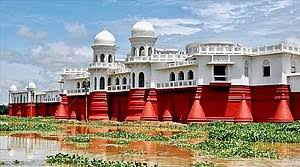

Nestled in the northeastern corner of India, Tripura is a state renowned for its rich cultural heritage, lush landscapes, and serene atmosphere. Here's a glimpse into what makes Tripura a captivating destination:
Tripura boasts a wealth of historical monuments and architectural wonders that reflect its glorious past. Explore the iconic Ujjayanta Palace in Agartala, a magnificent palace built by the Maharajas of Tripura, adorned with beautiful gardens, regal halls, and Mughal-inspired domes.
Marvel at the ancient temples of Tripura, such as the Tripura Sundari Temple in Udaipur, dedicated to the goddess Tripura Sundari, and the ancient ruins of Pilak, which offer insights into the rich cultural and architectural heritage of the region.
Immerse yourself in the vibrant cultural tapestry of Tripura, where diverse ethnic communities coexist harmoniously. Experience the colorful festivals of the state, including the Kharchi Puja, Garia Puja, and Ker Puja, where traditional music, dance, and rituals are celebrated with great fervor.
Witness traditional art forms such as Garia and Hojagiri dances, which showcase the cultural diversity and artistic talents of the indigenous tribes of Tripura.
Discover the scenic beauty of Tripura, from lush green valleys to serene lakes and rolling hills. Explore the tranquil surroundings of Neermahal, the "Water Palace," located amidst the tranquil waters of Rudrasagar Lake, offering panoramic views and a serene retreat from city life.
Embark on nature trails in the Jampui Hills or visit the mesmerizing Sepahijala Wildlife Sanctuary, where you can spot diverse flora and fauna amidst the natural beauty of the region.
Indulge in the culinary delights of Tripura, known for its flavorful cuisine and unique culinary traditions. Sample traditional dishes such as Mui Borok, Bamboo Shoot Fry, and Wahan Mosdeng, served with aromatic rice and spicy chutneys.
Experience the warm hospitality of Tripura's people with a stay in a traditional homestay or guesthouse, where you can savor authentic local cuisine and immerse yourself in the traditions and customs of the region.
Visit the sacred sites and spiritual retreats of Tripura, offering solace and tranquility to visitors seeking inner peace. Explore the ancient temples of Unakoti, known for its rock-cut sculptures and intricate carvings depicting Hindu deities and mythological figures.
Experience the serene ambiance of the Buddha Temple in Agartala, a peaceful sanctuary dedicated to Lord Buddha, where visitors can meditate and reflect amidst tranquil surroundings.
Whether you're drawn to historical monuments, cultural traditions, or natural landscapes, Tripura offers a diverse range of experiences for every traveler. Plan your journey to this enchanting state and immerse yourself in the culture and natural splendor of Tripura. Experience Tripura – Where Culture Meets Natural Splendor!
